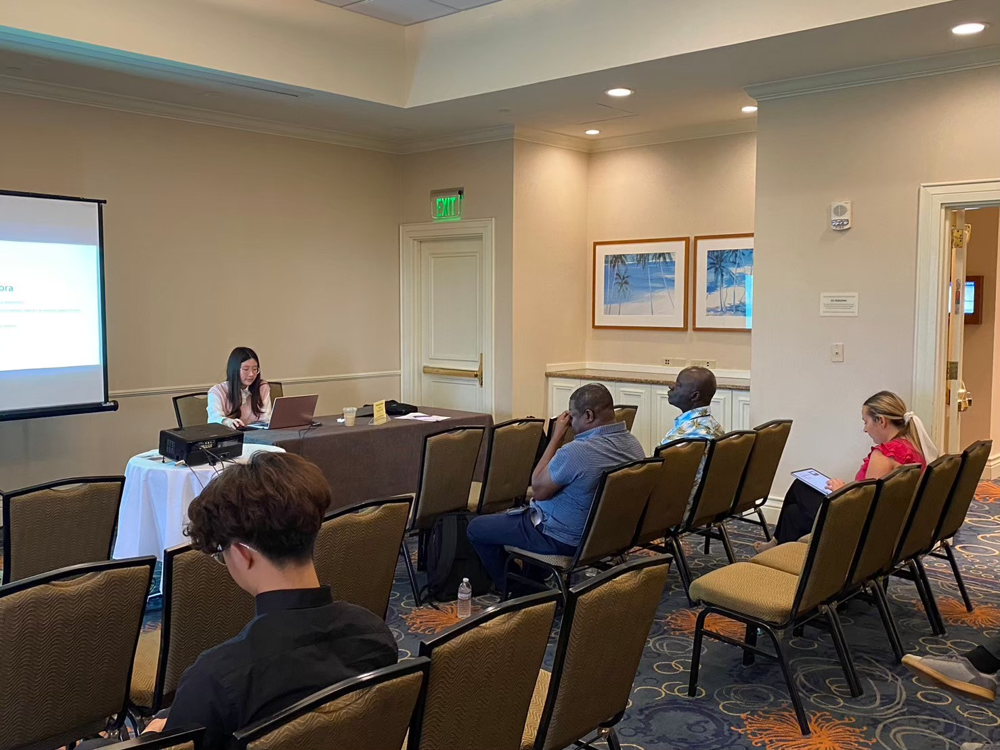

Publications & Presentations
24th Annual Hawaii International Conference on Education (HICE)
Honolulu, Hawaii, USA | First Author
-
Paper Title:
Man-Chen Liao and Hung-Chang Liao, "Design and Experimental Study of a Vocal Effects Unit Based on Frequency Response and Amplifier Design: A Comparison Between Practical Implementation and LTspice Simulation." -
Abstract:
Designed and implemented a functional vocal effects unit to investigate the influence of frequency response and amplifier design on audio signals. Utilized an FFT oscilloscope to characterize human voice spectrums, establishing parameters for LTspice simulations of low-pass, band-pass, and high-pass filters along with amplifier stages. Built a physical hardware prototype using microphone input and speaker output to benchmark real-world signal behavior against SPICE simulation models, identifying design non-idealities to enhance engineering education and circuit verification methodologies.
23rd Annual Hawaii International Conference on Education (HICE)
Honolulu, Hawaii, USA | First Author (Conference Presentation)
-
Paper Title:
Man-Chen Liao and Hung-Chang Liao, "Enhancing Student Mastery of Linear Algebra through Blended Learning." -
Abstract:
Investigated whether integrating blended learning strategies into traditional linear algebra courses can effectively mitigate student challenges associated with abstract concepts, multi-dimensional spaces, and proof-based reasoning. Utilizing literature analysis and qualitative semi-structured interviews, the study revealed that supplementary online lecture videos and adaptive materials enable self-paced learning, empowering students to overcome theoretical learning barriers and strengthening active, independent problem-solving capabilities in higher mathematics.
